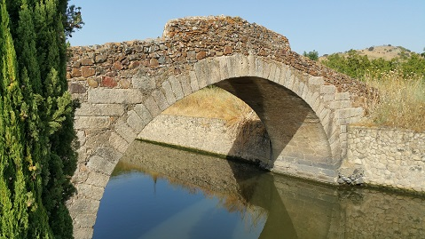

|
MEDELLÍN
Poblada desde el Paleolítico. De época prerromana, por los restos hallados en la necrópolis de época tartésica, se ha identificado con Conisturgis, capital de los conios, que fue destruida por los lusitanos.
La colonia romana de Metellinum, fue fundada como campamento militar en el año 79 a.e.c por el cónsul Quinto Cecilio Metello Pío, durante las guerras peninsulares del 80-70 a.e.c. Del cónsul procede el nombre "Metellinum". El Senado romano lo elevaría a la categoría de colonia, apareciendo en los textos como "Colonia Metellinensis". Lugar estratégico que servía de punto de enlace entre la Vía de la Plata y las rutas entre Augusta Emérita hacia Toletum y hacia Corduba. En el Itinerario de Antonino, el lugar aparece señalado como la primera mansión existente en la calzada que unía Mérida con Zaragoza y Córdoba, determinando el punto donde la vía se bifurcaba hacia esas dos direcciones. De época romana destaca el teatro, un posible templo, un pórtico columnado, tabernas, muros de aterrazamiento y villas romanas, como la villa romana de Las Galapagueras, de la que destaca su mosaico hallado en los años 60. También se aprecian restos de un puente anterior al actual, de época barroca. Otro puente es el puente romano de Cagánchez. El puente está situado junto a una villa romana, sobre el arroyo del mismo nombre, entre Medellín y Yelbes, a unos cuatro kilómetros de la villa.
 Ver: Puentes romanos
De época visigoda destaca el descubrimiento de la necrópolis de “El Turuñuelo”, en el que se recuperó un magnífico ajuar funerario de piezas de oro.
El teatro romano se localiza en el
centro de la ladera sur del Cerro del Castillo de Medellín. Se
asienta aprovechando el desnivel natural de la ladera. Destaca la
buena conservación que presentan algunas de sus partes, como los
suelos de mármol de la orchestra y los aproximadamente 800 sillares
que aún existen de sus gradas originales.
Ver:
Teatros romanos
Más info: http://medellinsitiohistorico.gobex.es/web/view/portal/index/index.php |